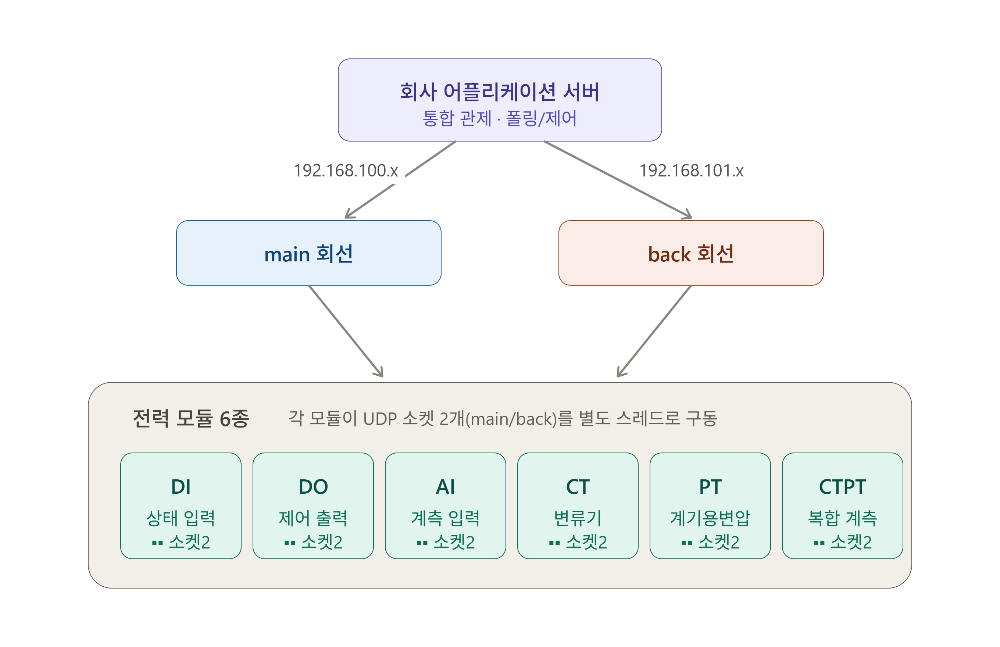

- 단순 목(mock) 수준으로는 회사 어플리케이션 서버의 실제 파싱·예외 처리 경로를 검증할 수 없다고 판단. 실장비가 고정된 UDP 바이너리 프로토콜로 통신하므로, 프레임을 바이트 단위까지 동일하게 재현하면 서버가 시뮬레이터와 실장비를 구분할 수 없음 → 초기 구현 비용이 크더라도 프로토콜을 완전 모사하는 방향을 선택
- 6종 모듈은 하는일(계측값 폴링, 모듈 상태 정보 반환등) 동일하되 다루는 데이터·제어 동작만 상이. 타입별로 6개를 각각 구현하면 당장은 빠르지만 공통 로직이 중복되고 프로토콜 변경 시 6곳을 수정해야 함 → 공통부를 추상화하는 방향으로 결정.
- 실장비는 main/backup 네이트워크 이중화 구조로 단일 회선만 모사하면 자원은 절약되나 서버의 이중화 절체 로직을 검증할 수 없음 → 시뮬레이터도 이중화 구조로 재현.
1. Command Type, NACK Code, 모듈 타입 등 모든 바이너리 코드값을 Enum으로 관리. 코드량은 늘지만, 코드↔의미 매핑을 컴파일 타임에 고정해 타입 안정성과 가독성을 확보.
2. 바이너리 프레임과 자바 객체 간 직렬화/역직렬화를 전담하는 전용 클래스로 변환 책임을 분리(관심사 분리). 프로토콜 규격 변경의 영향 범위를 이 계층으로 국한.
3. 데이터의 생명주기에 따라 저장소를 분리. 계측값,포인트 상태 등 런타임 데이터는 재기동 후 무의미하므로 인메모리 휘발성으로 유지해 불필요한 쓰기 부하와 복잡도를 제거하고, 모듈 식별 정보(모듈 번호·타입)만 DB에 영속화. 서버 실행 시 이 정보를 읽어 6개 모듈 인스턴스를 구동
4. 실장비가 신뢰성 대신 낮은 오버헤드를 택해 UDP를 사용하는 만큼 중복 수신이 발생할 수 있음. 동일 요청의 수신 여부를 FCS(Frame Check Sequence)로 관리해 중복 응답·중복 제어 실행을 방지 — 제어 명령의 중복 실행이 의도치 않은 차단기 동작으로 이어질 수 있어 필수적인 처리.
5. AbstractModule <P extends AbstractPoint> 로 모듈과 포인트(모듈의 데이터 단위) 구조를 추상화. 공통 로직은 AbstractModule에 단일 구현하고 타입별 상이한 로직만 상속 클래스에 격리하며, 제네릭 상한 경계로 각 모듈이 자기 포인트 타입을 캐스팅 없이 타입 안전하게 다루도록 설계. 초기 설계 복잡도를 감수하는 대신, 신규 모듈 타입 추가 시 포인트·모듈 클래스만 추가하면 되는 확장 구조를 확보.
6. 모듈마다 UDP 소켓을 main/backup 2개씩, 각각 별도 IP·별도 쓰레드로 구동해 이중화를 재현하고, main 회선 여부를 플래그로 관리해 전송 실패 시 회선을 절체.
- 물리 장비 없이 회사 어플리케이션의 통신 로직을 개발·검증할 수 있는 환경 확보.
- 정상 시나리오뿐 아니라 오류 응답·이중화 절체 등 엣지 케이스를 반복 재현할 수 있는 테스트 수단 마련.
- 공통 로직 단일화와 모듈 추상화로, 프로토콜 변경은 공통부 한 곳만, 신규 모듈 타입은 클래스 추가만으로 대응 가능한 확장 구조 확보.